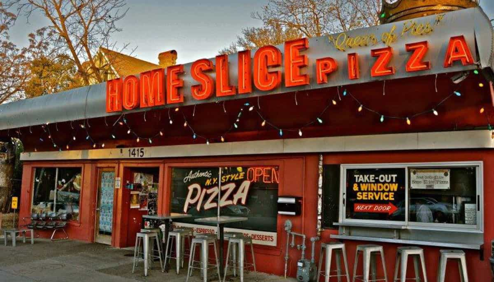
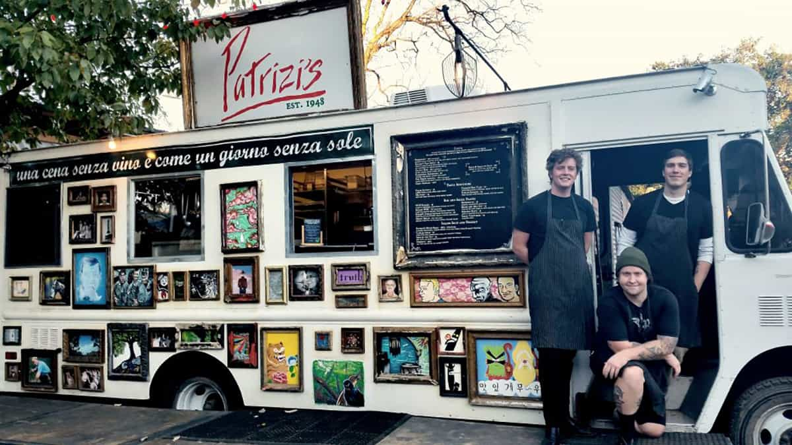

Restaurants
Some of the great places to eat in Austin, Texas
Franklin Barbecue
900 E 11th St, Austin, TX 78702
Barbecue

Home Slice Pizza
1415 S Congress Ave, Austin, TX 78704
Pizza

Juan in a Million
2300 E Cesar Chavez St, Austin, TX 78702
Tex-Mex

Launderette
2115 Holly St, Austin, TX 78702
American

Oseyo
1628 E Cesar Chavez St, Austin, TX 78702
Korean

Valentina's Tex Mex BBQ
11500 Menchaca Rd, Austin, TX 78748
Tacos

The Peached Tortilla
5520 Burnet Rd #100, Austin, TX 78756
Asian fusion

Patrizi's
2307 Manor Rd, Austin, TX 78722
Italian

Bufalina
1519 E Cesar Chavez St #200, Austin, TX 78702
Pizza

Via313
61 Rainey St, Austin, TX 78701
Pizza

Uchi
801 S Lamar Blvd, Austin, TX 78704
Japanese
888 Pan Asian Restaurant
2400 E Oltorf St #1A, Austin, TX 78741
Pan-Asian